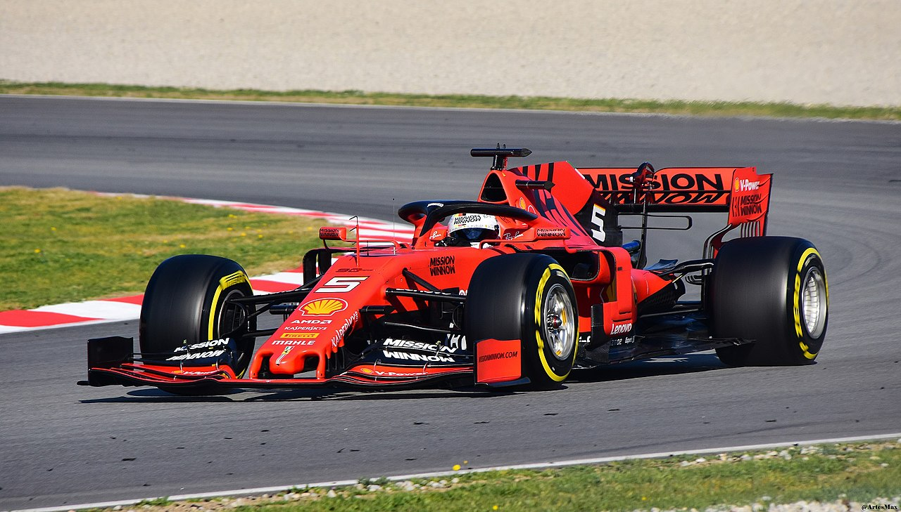

Mes passions
Rebonjour ! Si vous avez cliqué sur le lien, c'est que vous voulez en savoir plus sur mes passions.
Cette page web sert tout simplement à présenter mes passions et le sport que je pratique.
Voici le sport que je pratique :
- Je fais du tennis depuis 6 ans. Je fais 2 entraînements par semaine et je participe au championnat d'hiver avec mes coéquipiers.
Je suis classé 30/3.

Capture d'écran sur mon compte de la fédération française de tennis : Ten'Up |

Capture d'écran sur mon compte de la fédération française de tennis : Ten'Up |
| Voici la courbe de mes résultats en simple. En bleu, ce sont mes victoires. En rouge, ce sont mes défaites. |
Voici la courbe de mon classement. Comme on peut le voir, je suis actuellement classé 30/3. |
- Le classement au tennis est assez étrange. En effet, on commence par être 40 puis on peut monter 30/5, 30/4, 30/3 ...
Comme il est compliqué à comprendre et à expliquer, je vous renvoie sur cette page web du journal "L'Équipe" qui explique son origine et son fonctionnement :
Comprendre le classement français
J'ai aussi des passions autre que le tennis :
- Je suis un grand fan de Formule 1.
Pour ceux qui ne connaissent pas ce sport, je vous mets une définition simple de Wikipédia :
La Formule 1, communément abrégée en F1, est une discipline de sport automobile considérée comme la catégorie reine de ce sport.
Elle a pris au fil des ans une dimension mondiale et elle est, avec les Jeux olympiques et la Coupe du monde de football, l'un des événements sportifs les plus médiatisés.
Pour faire simple, il existe en Formule 1 dix équipes qui ont chacune 2 voitures. Il y a donc 20 pilotes qui s'affrontent lors des 22 grands prix de cette saison.
Le but est de gagner le championnat du monde pilote. Pour cela chaque place dans une course rapporte un certain nombre de points : le vainqueur de chaque Grand Prix a 25 points, puis les suivants de 18, 15, 12, 10, 8, 6, 4, 2 et 1.
Le champion du monde en titre est le sextuple champion du monde Lewis Hamilton qui roule pour Mercedes.
Personnellement, je supporte Sebastian Vettel qui est chez Ferrari. Il a été 4 fois champion du monde et est le principal rival de Lewis Hamilton.
Pour ceux qui n'en n'ont jamais vu, voici à quoi ressemble une Formule 1 :

Cette voiture est une Formule 1 de 2019 de l'écurie Ferrari :
La source de cette image
Si vous voulez en apprendre plus sur ce sport, je vous laisse quelques liens :
- J'aime aussi beaucoup les jeux vidéos :
En effet, en cette période de confinement, je passe peut-être un peu trop de temps à jouer à Red Dead Redemption 2 ou Rocket League ...
- Enfin, j'apprécie aussi énormément tout ce qui touche aux sciences.
J'adore lire des revues scientifiques. J'aime par exemple celles de Science et vie .
Ma présentation de mes passions est terminée.
Maintenant si vous voulez en savoir plus sur par exemple mon projet professionnel, je vous invite à retourner au sommaire pour aller sur les pages dédiées à ces sujets.
Bonne lecture !
Pour un retour au menu, cliquez sur ce lien :
Retour au menu
{kind=link}